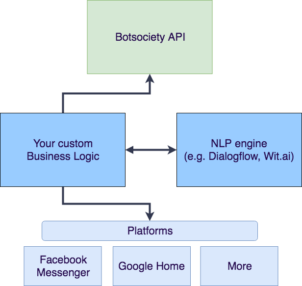

This document is intended to be an overall guide to the usage of the Botsociety API. A detailed documentation of every endpoint is maintained at Botsociety Apiary Docs, although it may change in the future.
Overview
Your chatbot or voice assistant stack can be summarized as follows:

The Botsociety API allows your business logic to access your mockup content. More on that later.
Business logic This block represents your codebase, eventual custom API, and database integrations. Part of the dialog management.
NLP This block represents your Natural Language Processing engine. Usually, these engines are either offered as a SaaS (like wit.ai or Dialogflow) or as an open source framework like Rasa.ai.
Platforms This block represents the platform(s) that your chatbot is deployed on. This block includes also the client side of your custom website or mobile application if you happen to use them.
The ideal flow can be summarized as follows:
- The user writes a request on a platform
- The user request is received by your codebase
- If necessary, the request is piped through the Natural Language Processing engine for intent extraction
- Once the intent is identified, your codebase will identify the correct response for the user. In your codebase, such message can be identified by a numeric, progressive ID
- Your codebase calls the Botsociety API and retrieves the content of the message, by ID
- If variables are needed - example, a data extracted from your database or custom API - your custom codebase can simply replace those
- The codebase calls the platform and delivers the message
This structure has different advantages:
- Total flexibility and control over your codebase. You don't need to pipe your production data through a third party SaaS if you don't want to
- Separation between code and content. You can change the content of your message, anytime, without having to redeploy your code
- Separation between content and NLP. By having your content on Botsociety, you can change your Natural Language Processing engine without having to re-input the content of your bot.
- You can turn your designs into complete bots very quickly
Note that this is course a standard, basic architecture. It is also possible not to use your custom codebase, and rely completely on a third party Software As a Service. For example, Dialogflow allows you to both integrate with multiple platforms and to manage dialog structure, as well as the Natural Language Processing. You can easily import your Botsociety design into Dialogflow once your design phase is concluded.